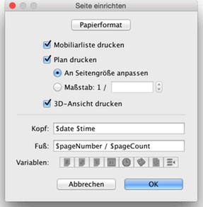
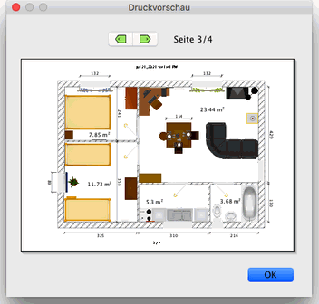

| Drucken einer Wohnung | |||
Um eine Wohnung zu drucken, wählen Sie Datei > Drucken…. Standardmäßig druckt Sweet Home 3D die Mobiliarliste, den Wohnungsplan und die derzeitige
3D-Ansicht in der Standardpapiergröße, Ränder und Ausrichtung.  Im Dialog Seite einrichten können Sie nun die Papiergröße und
Ausrichtung anpassen, indem Sie auf die Schaltfläche Papierformat klicken. Sie
können außerdem auswählen, ob die Mobiliarliste, der Wohnungsplan und die 3D-Ansicht
einer Wohnung gedruckt werden soll oder nicht. Wenn Sie die automatische
Skalierung des Wohnungsplanes nicht auswählen möchten, können
Sie eine andere Skalierung auswählen.
Damit Sie nicht den exakten Namen einer Variable tippen müssen, können Sie die Variablenschaltflächen unter den Kopf- und Fußzeilenfeldern benutzen. Da das $-Zeichen reserviert ist für Variablen, müssen Sie den $$-Code benutzen, um ein $-Zeichen zu drucken. Um eine Druckvorschau Ihrer Einstellungen zu bekommen, wählen Sie Datei > Druckvorschau….  Im Druckvorschau-Fesnter sehen Sie, wie eine Wohnung gedruckt werden würde. Um die Vorschauseite zu ändern, klicken Sie auf die Pfeile oben am Fenster oder drücken Sie die Pfeiltasten. |
|